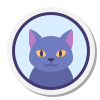
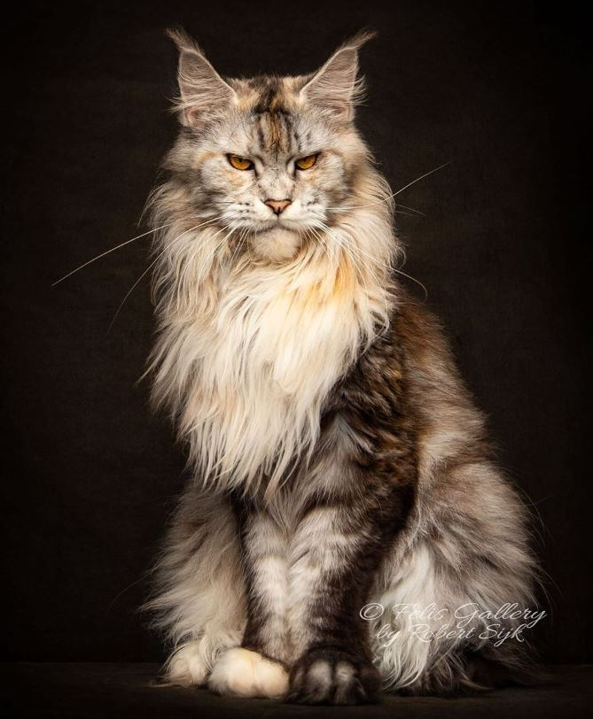
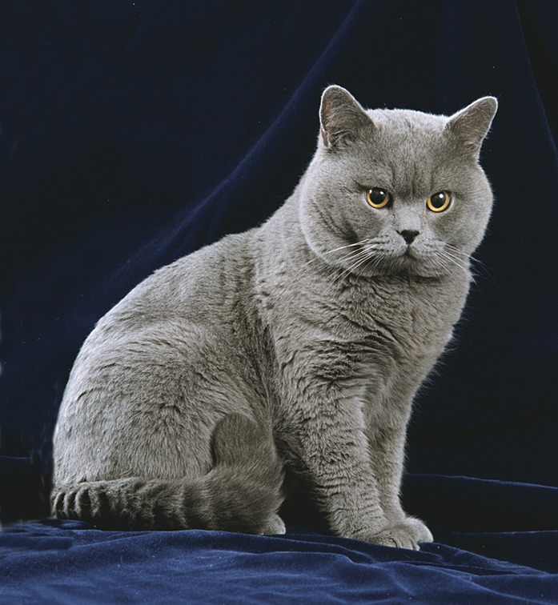
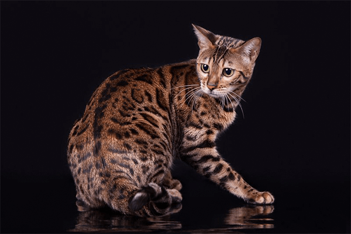
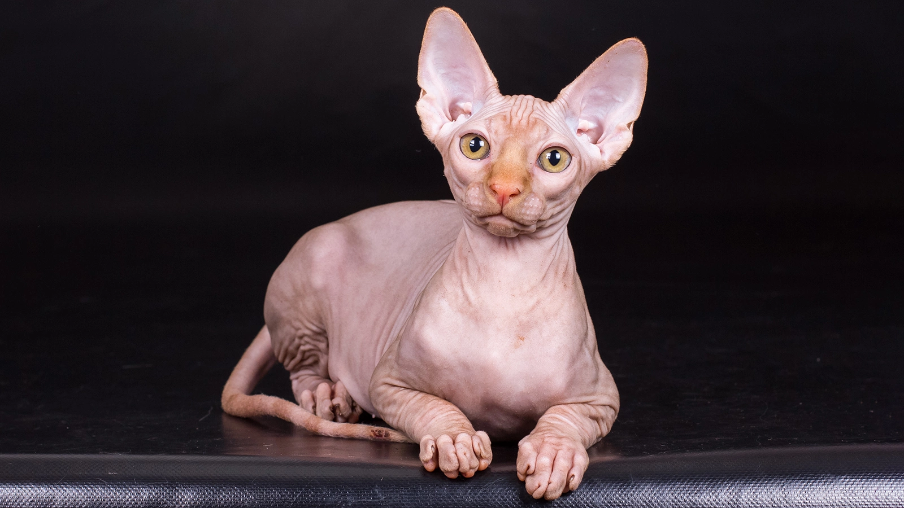
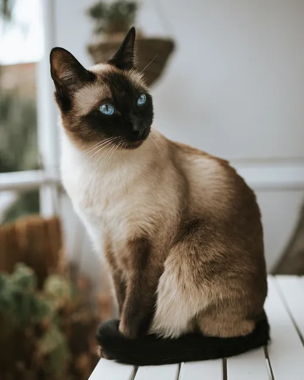
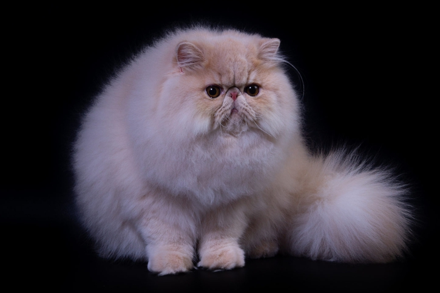

Добро пожаловать в мир котиков!
Самые милые, пушистые и игривые создания ждут тебя 🐾
Самые милые, пушистые и игривые создания ждут тебя 🐾
Мы любим котиков и хотим показать их всему миру! У нас самые пушистые и добрые питомцы. Кошки – это не просто домашние питомцы, а настоящие друзья, которые приносят в нашу жизнь тепло и радость. Их мурчание успокаивает, их грациозность завораживает, а их игривость делает каждый день чуточку веселее. Наш проект создан для всех, кто любит пушистых друзей и хочет узнать о них больше. Открой для себя удивительный мир котиков вместе с нами!
У них лапки
Маленькие, мягкие, пушистые – лапки котиков созданы для умиления. А их следы на снегу или полу – это настоящее искусство.
Они дарят любовь
Котики обожают своих хозяев – они мурчат, трутся, ложатся рядом, обнимают лапками и показывают, что ты им важен.

Они милые
Ушки, носики, усики – всё в них идеально! Даже когда они спят, играют или просто смотрят на тебя, они остаются самыми милыми существами.
Они приносят радость
Их смешные позы, резкие прыжки, нелепые шалости и неожиданные повадки заставляют нас смеяться каждый день.
✔ У него лапки, он мурчит и игнорирует твои просьбы
✔ Он смотрит на тебя с чувством превосходства. Как будто знает что-то, чего ты не знаешь.
✔ Он может мгновенно превратиться в жидкость. Влезает в коробки, банки, сумки и выглядит абсолютно довольным.
В мире насчитывается от 40 до 70 пород кошек. Разные организации признают разное количество пород, но в среднем их около 44.

Самая крупная порода кошек. Дружелюбные, умные, пушистые.

Плюшевая шерсть, круглые щёчки, независимый характер.

Уникальная леопардовая окраска, активные и игривые.

Лысые, но тёплые! Ласковые и любят внимание.

Общительные, преданные, с ярко-голубыми глазами.

Шикарная длинная шерсть, спокойные и ласковые.